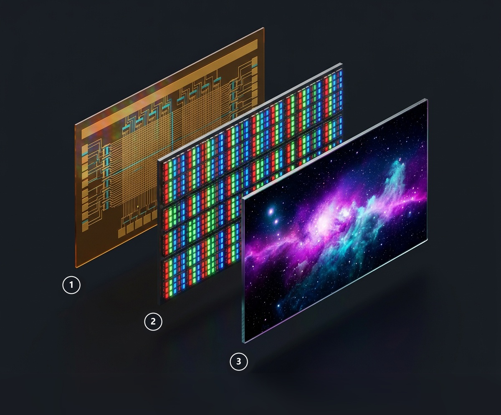
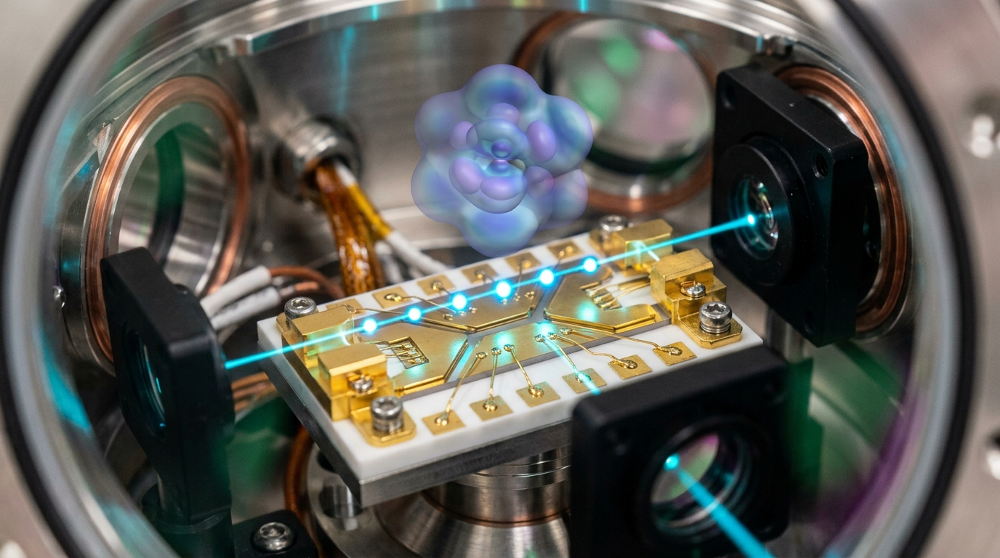
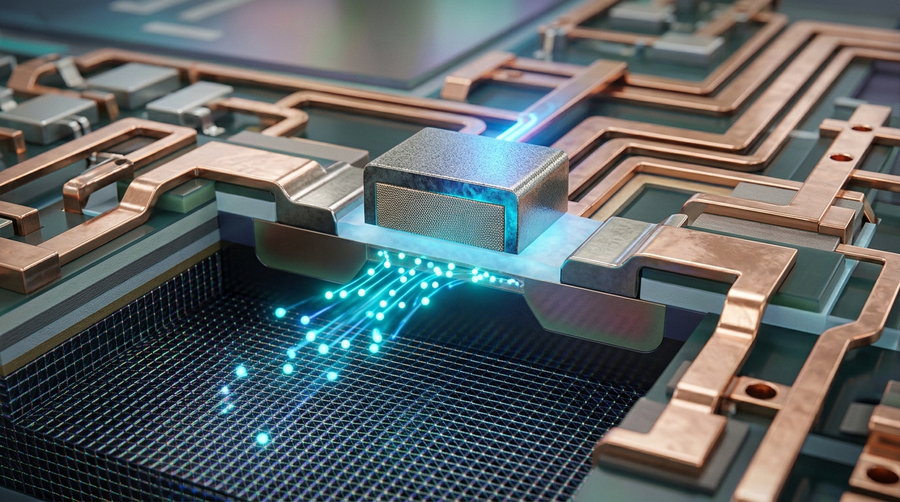
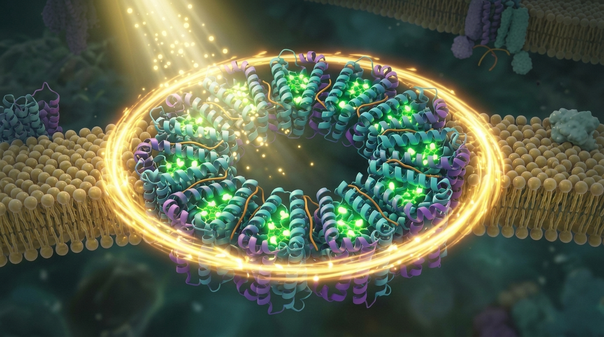
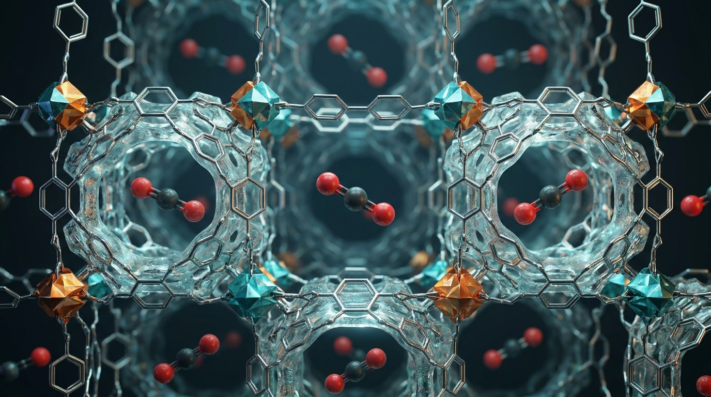

컴퓨터 시뮬레이션으로 탐구하는
빛과 분자의 양자 동역학 연구실
KAIST 화학과 CPRL(Computational Photodynamics Research Lab)은 슈퍼컴퓨터와 첨단 양자역학 시뮬레이션을 통해 분자의 빛 반응과 전자 이동을 탐구하는 계산화학물리 연구실입니다.
CPRL 지도교수


CPRL 연구진

눈에 보이지 않는 작은 세계를
컴퓨터 가상 실험실에서 탐험합니다
KAIST 화학과 CPRL(화학물리연구실)은 화학약품을 섞는 실험실이 아닌, 슈퍼컴퓨터와 양자 컴퓨터를 활용해 화학 반응 및 양자 세계를 탐구하는 연구실입니다. 우리가 매일 사용하는 스마트폰 액정 화면부터 미래 인류를 구할 신약 분자 설계까지, 컴퓨터 시뮬레이션으로 화학의 새로운 미래를 열어가고 있습니다.
화학 반응 에너지 지형도 구축

"컴퓨터와 AI를 활용해, 복잡한 화학 반응의 에너지 지형을 빠르고 정확하게 계산해요"
수만 개의 원자가 얽혀 있는 생명체 속 단백질이나 신약 분자의 화학 반응은 슈퍼컴퓨터로도 하나하나 정밀하게 계산하기 어렵습니다. 따라서 화학 반응이 직접 일어나는 핵심 영역은 정밀한 양자역학으로 세밀하게 계산하고, 주변을 둘러싼 방대한 물 분자나 단백질 환경은 계산 속도가 빠른 분자역학으로 효율적으로 처리하는 하이브리드 시뮬레이션 기술(IM/MM)을 CPRL 연구실에서 독자 개발했습니다. 여기에 인공지능(신경망 머신러닝)을 결합하여 복잡한 에너지 변화를 수학적으로 매끄럽게 보간함으로써, 화학 반응의 전 과정을 실제 실험실보다 훨씬 빠르고 정확하게 컴퓨터 가상 공간에서 예측해 냅니다.

양자 효과 시뮬레이션

"스마트폰에 갇혀있던 75%의 전자를 구출하여, 보다 효율적으로 빛을 만들어요"
분자 속 전자들은 주변의 열과 진동 때문에 양자적 특성이 잘 보이지 않지만, 전기를 받으면 높은 에너지 준위로 튀어 올랐다가 내려오며 빛을 방출하는 과정에서 전자 스핀과 결맞음 같은 신비로운 '양자 효과'를 강하게 드러냅니다. 그런데 우리가 매일 쓰는 스마트폰 디스플레이(OLED)에서는 단 25%의 전자들만 빛을 내고, 나머지 75%의 전자는 닫힌 방에 갇혀 '발열'로 사라지는 치명적인 배터리 낭비가 존재했습니다. CPRL 연구실은 독자적인 양자 동역학 시뮬레이션을 통해 갇혀 있던 전자를 높은 에너지 상태로 우회시켜 100% 모두 빛으로 탈출시키는 혁신적인 '핫 엑시톤' 메커니즘을 세계 최초로 규명했습니다.

양자 컴퓨팅 툴 개발

"기존 슈퍼컴퓨터의 한계를 넘어, 양자 컴퓨터와 손잡고 복잡한 분자의 비밀을 풀어요"
분자 속 수많은 전자들은 서로를 밀어내며 복잡하게 얽혀 있어, 분자가 조금만 커져도 계산해야 할 경우의 수가 우주 전체의 모래알 수보다 많아지는 이른바 '지수 폭발(Exponential Explosion)'이 일어납니다. 인류 최강의 슈퍼컴퓨터조차 멈춰버리는 이 난제를 해결하기 위해 CPRL 연구실은 차세대 게임체인저인 양자 컴퓨터를 화학 계산에 전격 도입했습니다. 특히 현재 초기 양자 하드웨어가 지닌 물리적 노이즈를 극복하기 위해, 양자 컴퓨터와 고전 컴퓨터가 정밀하게 역할을 분담하는 독창적인 '양자-고전 하이브리드 알고리즘(VQE-PT2)'을 개발하여 실제 이온트랩 양자 하드웨어에서 화학 반응 예측 오차를 90% 이상 획기적으로 줄였습니다.
스마트폰 화면을 100배 줌인했다!
손바닥 위의 작은 우주, OLED의 비밀
우리가 매일 만지는 스마트폰 화면 속에는 수백만 개의 빛나는 미세 화소가 숨어 있습니다. 물방울 돋보기로 들여다본 빨강·초록·파랑 빛의 마술부터, 화면 뒤 거대한 백라이트를 없애고 종이처럼 얇아진 차세대 디스플레이의 내부 단면까지 생생한 시각 자료로 파헤쳐 봅니다.
스마트폰 속 노란 바나나, 진짜 노란 물감으로 칠한 걸까?
우리가 매일 보는 스마트폰 화면 속 노란 바나나. 돋보기를 바짝 대고 들여다보면 뜻밖의 광경이 펼쳐집니다. 화면 전체에는 분명 매끄러운 노란색 과일이 떠 있지만, 돋보기 렌즈 속을 확대해 보면 노란색 물감은 온데간데없고 오직 빨간색(R)과 초록색(G) 꼬마전구들이 촘촘하게 줄지어 반딧불이처럼 빛나고 있거든요!

꼬마전구 삼형제(R·G·B)의 마술: 빛으로 그리는 1,670만 가지 색
스마트폰 화면을 이루는 최소 단위인 단 1개의 화소(픽셀) 속에는 빨강(R), 초록(G), 파랑(B) 세 가지 미세 꼬마전구(서브픽셀)가 나란히 들어앉아 있습니다.
물감은 섞을수록 탁해져 검은색이 되지만, 빛은 겹칠수록 에너지가 더해져 순백색(100% White)이 되는 가산 혼합의 원리를 따릅니다. 빨간 전구와 초록 전구를 동시에 켜면 신기하게도 탐스러운 노란색 바나나가 완성되고, 세 전구를 모두 최대로 켜면 눈부신 순백색이 됩니다.
각 꼬마전구의 밝기를 256단계(0~255)로 정밀하게 조절하면, 256 × 256 × 256 = 16,777,216가지! 단 3개의 빛만으로 자연계에 존재하는 거의 모든 색을 눈앞에 생생하게 그려냅니다.
화면 뒤 거대한 전등을 없앴다! LCD vs OLED 단면 해부

액정 디스플레이 (LCD)
LCD는 화면 뒤편에서 24시간 내내 켜져 있는 거대한 흰색 전등(백라이트)을 두고, 그 앞에 액정 블라인드와 컬러필터를 겹쳐 빛을 가려가며 색을 표현합니다. 문제는 밤하늘처럼 어두운 검은색을 표현할 때도 뒤편의 전등은 항상 켜져 있다는 점입니다. 액정 블라인드를 아무리 꽉 닫아도 미세한 틈새로 전등 빛이 새어나오는 빛샘 현상이 발생하여, 완벽한 칠흑 대신 뿌연 회색 밤하늘로 보이게 됩니다. 또한 두꺼운 조명판과 단단한 유리 기판이 여러 겹 겹쳐 있어 화면이 두껍고 절대 구부릴 수 없습니다.

유기 발광 소자 (OLED)
반면 OLED는 뒤를 비추던 거대한 전등을 통째로 없앴습니다. 유기 화합물로 만들어진 미세 화소 하나하나가 전기를 받으면 스스로 빛을 내기(자발광) 때문입니다. 특히 검은색을 표현할 때는 해당 화소의 전원을 0%로 완전히 꺼버립니다. 빛이 단 0.001%도 새어나오지 않아 우주 한가운데처럼 완벽한 칠흑의 리얼 블랙과 무한한 명암비를 완성합니다. 게다가 두꺼운 조명판과 유리가 빠져 두께가 0.1mm 수준으로 얇아졌으며, 종이처럼 반으로 접히는 놀라운 폴더블 스마트폰이 탄생할 수 있었습니다.
백라이트가 사라지며 바뀐 4가지 변화

01두께 혁명: 백라이트 5겹 부품 제거
패널 뒤를 차지하던 무거운 조명판과 광학 부품들을 모두 없애 종이처럼 얇아졌습니다.

02빛의 혁명: 완벽한 우주의 리얼 블랙
검은색 화소는 전원을 완전히 꺼버려 빛이 전혀 새지 않아 무한대의 명암비를 만듭니다.

03형태 혁명: 종이처럼 접히는 폴더블
깨지는 유리 대신 유연한 필름을 사용하여 마음대로 접거나 둘둘 마는 화면이 탄생했습니다.

04에너지 혁명: 다크 모드 배터리 절약
검은 화면에서는 화소가 전기를 전혀 쓰지 않아 스마트폰 배터리가 오래갑니다.
빛의 합성과 OLED 가상실험실
OLED 2차시
Three.js 3D
3D 형광빛의 원리
자외선(UV) 빛을 흡수한 전자가 3층으로 들뜬 후 열을 흘리고 파란색 형광으로 착지하는 에너지 보존 과정을 3D 공간에서 직접 조작합니다.
 OLED 4차시
진동판 & 분자 3D
OLED 4차시
진동판 & 분자 3D
스마트폰 에너지 효율 분자 연구
지진 진동판 건물 흔들림 비유를 통해, 분자 골격을 고정하여 75% 열 진동을 차단하고 100% 빛으로 전환하는 원천 기술을 시뮬레이션합니다.
 OLED 심화
스핀 통계 랩
OLED 심화
스핀 통계 랩
100개 엑시톤 스핀 통계
전류 주입 시 생성되는 단일항(25%)과 삼중항(75%)의 스핀 비율을 분석하고, KAIST 핫 엑시톤 스위치로 버려지던 열을 빛으로 구출합니다.
양자컴퓨터의 활용 가상실험실
양자 2차시
확률 측정 랩
동전 팽이와 큐비트 중첩
정지한 동전(고전 비트)과 회전하는 동전(큐비트 중첩)을 비교하고, 중첩 각도 조절로 100회 연속 측정 확률을 검증합니다.
 양자 3차시
두 컴퓨터 협동 계산
양자 3차시
두 컴퓨터 협동 계산
2인 3각 바닥 상태 탐색
수소 분자($H_2$)의 결합 거리(R)를 조절하며, 양자 컴퓨터와 일반 컴퓨터가 피드백 루프로 최저 결합 에너지를 찾아냅니다.
 심화 연계
3D 심층 인터랙티브
심화 연계
3D 심층 인터랙티브
이온트랩 양자 프로세서 해부
원자 오븐, 폴 트랩 회전 전기장, 레이저 냉각 기술을 고해상도 3D 인터랙티브 그래픽으로 직접 회전하고 분해합니다.
빛의 합성과 OLED 발표 슬라이드
 OLED 1차시
OLED 1차시
보이지 않는 자외선
토닉워터와 형광펜의 자외선 반응, 스펙트럼 관찰과 형광의 기초 원리를 탐구하는 슬라이드 덱.
 OLED 2차시
OLED 2차시
전자의 에너지 계단
전자의 에너지 흡수, 진동 열이완, 형광 방출(스토크스 이동) 과정을 시각화한 슬라이드 덱.
 OLED 3차시
OLED 3차시
75% 배터리 도둑
OLED 디스플레이의 발광 원리와 양자역학적 스핀 통계(단일항 25% vs 삼중항 75%) 열손실 슬라이드 덱.
 OLED 4차시
OLED 4차시
KAIST의 분자 연구
분자 골격 고정화 및 핫 엑시톤 기술로 75% 열손실을 극복하는 KAIST CPRL 분자 공학 슬라이드 덱.
양자컴퓨터의 활용 발표 슬라이드
 양자 1차시
양자 1차시
슈퍼컴퓨터의 한계
체스판 쌀알 퀴즈와 $2^N$ 지수 폭발, 카페인 분자조차 계산 못하는 슈퍼컴퓨터의 한계를 밝히는 슬라이드 덱.
 양자 2차시
양자 2차시
동전 팽이와 큐비트
누운 동전(비트)과 도는 동전(큐비트)을 비교하며 중첩과 측정, 양자 컴퓨터가 문제를 푸는 방식을 알아보는 슬라이드 덱.
 양자 3차시
양자 3차시
두 컴퓨터의 2인 3각 계산
양자 컴퓨터와 일반 컴퓨터가 데이터를 주고받으며 분자의 최저 결합 에너지를 찾아가는 2인 3각 계산 발표 슬라이드.
 양자 4차시
양자 4차시
분자 설계 스타트업
친환경 비료, 안전한 배터리, 맞춤형 신약 중 하나를 골라 미래 분자 설계 스타트업을 기획하는 발표 슬라이드.
원자 한 개를 낚아채 양자 두뇌를 만들다
초고진공 속 이온 트랩과 알고리즘의 비밀
인간이 만든 인공 칩의 한계를 넘어, 우주에서 가장 완벽한 천연 원자를 허공에 띄웠습니다. 400℃ 원자 오븐에서 0.0001 K 정지 포획, 나노초 레이저 펄스 게이트, 그리고 파이썬 코드가 실제 물리적 원자를 조작하여 분자의 비밀을 푸는 하이브리드 파이프라인까지 생생한 실험실 화보로 파헤쳐 봅니다.
하드웨어의 두 갈래 길: 극저온 샹들리에 vs 실온 진공 챔버
양자 컴퓨터의 '두뇌'는 무엇으로 만들까요? IBM과 구글은 실리콘 기판 위에 인공 금속 회로를 만들고 영하 273.14℃를 유지하기 위해 거대한 '황금빛 샹들리에(희석 냉동기)'를 씁니다. 하지만 사람이 깎아 만든 금속 회로는 큐비트마다 미세한 제작 오차가 존재합니다. 반면 KAIST 연구팀이 활용하는 이온 트랩(Ion Trap) 방식은 인간이 회로를 깎지 않습니다. 우주 어디서든 100% 오차 없이 완벽하게 똑같은 자연의 천연 원자(이테르븀, ¹⁷¹Yb⁺)를 실온(Room Temp) 초고진공 챔버 허공에 띄워 큐비트로 사용합니다.

원자를 낚아채 1열로 세우다: 400℃ 오븐과 쿨롱 결정

금속을 400℃로 달구면 기화된 원자들이 초속 수백 미터의 총알처럼 맹렬히 튀어나옵니다. 과학자들은 마주 달려오는 원자를 향해 레이저를 쏘아 운동량을 깎아내는 '도플러 레이저 냉각(광자 브레이크)'을 가합니다. 수만 번의 빛 충격을 가하면 불과 0.01초 만에 원자의 열운동이 사라져 절대영도 직전(0.0001 K)으로 얼어붙습니다. 얼어붙은 원자들은 4개의 전극이 초당 수천만 번 극성을 바꾸는 '폴 트랩(Paul Trap)' 전기장에 갇힙니다. 마치 빠르게 회전하는 말안장 위에 놓인 구슬처럼 허공에 둥둥 떠서 탈출하지 못하고 한자리에 멈춰 서게 됩니다.

0과 1의 벽을 깨부수다! 고전 비트 vs 양자 큐비트 1열 종대

0 또는 1, 한 번에 한 걸음만 걷는 순차 연산
일반 컴퓨터의 비트(Bit)는 전등 스위치처럼 0(꺼짐) 또는 1(켜짐) 중 단 한 가지 상태만 가질 수 있습니다. 3개의 비트가 있어도 [000]부터 [111]까지 8가지 조합 중 한 번에 하나씩 차례대로 시험해야 합니다. 비트 수가 늘어날수록 계산 시간이 기하급수적으로 폭증하여 복잡한 분자 구조를 풀 수 없습니다.

중첩과 얽힘, 1,125조 가지의 동시 연산
반면 원자 큐비트는 355nm 레이저 펄스를 맞으면 0이면서 동시에 1인 양자 중첩 상태가 됩니다. 또한 5μm 떨어진 원자들은 보이지 않는 용수철(진동 모드)로 연결되어 있어, 한 원자의 진동이 전체로 전파되며 운명을 공유하는 양자 얽힘을 만듭니다. 50개의 큐비트만으로 2⁵⁰(약 1,125조 개)의 상태를 단 한 번에 동시 연산합니다.
파이썬과 양자의 융합: 클라우드에서 챔버 레이저까지
여러분이 학교 컴퓨터실에서 작성한 10줄의 파이썬(Python Qiskit) 코드는 어떻게 실제 실험실 진공 챔버 속 원자들을 지휘할까요? 소프트웨어 명령어가 클라우드를 통해 전달되면, 19인치 서버 랙의 리눅스 컨트롤러가 이를 받아 나노초 단위의 레이저 제어 전기 펄스로 변환합니다. 초고정밀 광학계가 이온을 타격하고, 원자가 뿜어내는 푸른 형광 빛을 EMCCD 카메라로 촬영하여 "빛남 = 1, 어두움 = 0"의 디지털 결과로 변환해 화면에 띄웁니다.

# 1. 2-큐비트 수소 분자(H2) 양자 회로 생성
from qiskit import QuantumCircuit
qc = QuantumCircuit(2)
qc.h(0) # 0번 큐비트 아다마르 (중첩)
qc.cx(0, 1) # 0-1번 큐비트 CNOT (얽힘)
qc.measure_all() # 369.5nm 형광 측정 명령
# 2. 클라우드를 통해 실제 양자 컴퓨터로 전송
backend = provider.get_backend('IonQ Aria')
job = backend.run(qc, shots=1000)
print("측정된 전자 구름 확률 분포:", job.result().get_counts())원자 2개 진공 포획 & 1열 정렬
초고진공 챔버 전극 사이에 이테르븀 이온 2개를 나란히 띄워 수소 분자(H2)의 전자 2개에 1:1 물리적으로 대응시킵니다.
355nm 레이저로 0과 1 동시 공존
0번 이온을 향해 레이저 펄스를 발사해 0(바닥상태)과 1(여기상태)이 50:50으로 동시에 공존하는 양자 중첩을 만듭니다.
원자 진동으로 화학 결합 결속
두 이온 사이의 쿨롱 척력(용수철 진동)을 레이저로 공명시켜, 두 원자가 운명을 공유하는 양자 얽힘(화학 결합)을 완성합니다.
푸른빛 촬영으로 분자 결합 에너지 도출
369.5nm 검출 레이저를 비춰 빛나는 형광 광자를 초고속 카메라로 촬영하여, 수소 분자의 실제 전자 결합 에너지 곡선을 최종 계산합니다.
KAIST 연구진의 혁신: 오차 90%를 줄인 하이브리드 알고리즘
현재 인류의 초기 양자 컴퓨터는 레이저 노이즈와 미세 오차가 발생합니다. KAIST 화학과 이영민 교수 연구실(CPRL, 2024)은 고전 슈퍼컴퓨터와 양자 컴퓨터가 2인 3각으로 협력하는 혁신적인 알고리즘(oo-upCCD-PT2)을 개발했습니다.
가장 난해한 전자의 양자 얽힘은 양자 컴퓨터가 풀고, 나머지 노이즈와 오차는 고전 슈퍼컴퓨터가 실시간으로 수학적 보정을 가해 화학 반응 에너지 오차를 90% 이상 대폭 줄여 이론적 정답에 도달했습니다.
양자 화학 시뮬레이션이 바꿀 미래: 인류 4대 난제 해결
복잡한 분자 구조를 원자 단위에서 오차 없이 계산할 수 있게 되면 인류의 삶은 어떻게 바뀔까요? 비커와 시험관을 들고 수년씩 밤을 새우던 전통 화학 연구를 넘어, 양자 컴퓨터는 식량·에너지·의학·기후 등 인류가 마주한 4대 난제를 가상 시뮬레이션으로 단 며칠 만에 해결하는 혁신적인 열쇠가 됩니다.
01상온 비료: 전 세계 에너지 2% 절약
고온·고압이 필요한 하버-보슈 공정을 대신할 상온 질소 고정 분자 촉매를 양자 컴퓨터로 설계하여 농업 에너지 소비를 획기적으로 줄입니다.
02에너지 혁명: 화재 없는 전고체 배터리
배터리 폭발 위험을 원천 차단하고 수명을 극대화하는 고체 전해질 분자 계면을 양자 컴퓨터로 정밀 계산해 차세대 모빌리티를 혁신합니다.

03의학 혁신: 난치병 맞춤 신약 초고속 탐색
바이러스 단백질과 약물 분자의 양자 결합을 컴퓨터 안에서 완벽히 검증하여 신약 개발 기간을 10년에서 수개월로 대폭 단축합니다.

04기후 솔루션: 이산화탄소 포집 신소재
공기 중 온실가스를 초정밀 흡착하는 다공성 결정 나노케이지(MOF) 구조를 가상으로 발굴해 지구온난화를 억제합니다.